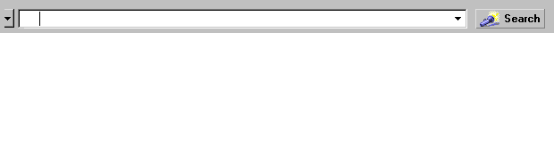
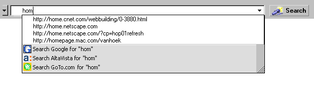
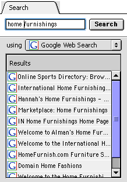

| Mojo Navigator |
UI Specification
|
|
Search and Navigation send feedback to the component specific newsgroup |
Last Modification:
|
|
|
|
|
Author German W. Bauer (Netscape Client UE Group) |
Status: Implementable Proposal. Usability testing has to be successful before ship. |
What's related:
Quick Index: Design Overview |
Feature Team |
With the amount of data available on the Net increasing every day, Search has become one of the major activities of end-users. The target user for search is best described by looking at the target user for Mojo in general, with emphasis on newcomers, as they will tend to use search as an initial way to get around on the net.
Basic Tasks Intermediate Tasks Advanced Tasks Find a search term on a page currently viewed Access smart browsing key words saving a query for later reuse Search web pages on the Net Going back to search results page (as a means of navigating) pick multiple search providers for a net query Search specific data using net-based resources (e.g. yellow pages etc.) pick a different search provider for a net query
| 
quick access to search and smart browsing via URL bar widget |
|||||||||||||||||||||||||
global access to search via omnipresent search menu |
Context search via contextual menu (prob. not implimentable for mojo)
|
||||||||||||||||||||||||

Overall advantages for this design: |
|
A keyword menu button to the left of the URL bar lists other keywords such as quote, buy etc.
Activating any keyword will fill the URL bar with the keyword followed by a helpful prompt in brackets which is selected. For example when users press search, we put quote [enter stock symbol] into the URL bar.Being selected this help text would go away as soon as the user starts typing and be replaced with what the user is typing yet leaving the keyword intact. Over time we expect users to learn understand the use of keywords. This behavior is also completely 'backwards compatible' with 4.x's keywords behavior, but we expect it to be much more discoverable.
The proxy icon acts as a representation of the page being shown with the URL being displayed in the URL field. As soon as the user types anything into the location field the page proxy icon goes away. It reappears once the page is fully loaded.
The page proxy icons can be dragged where any bookmark can be dragged and dropped.
The type-in field (also referred to address field or URL field) acts as area that receives either a network address, a keyword request or a search request. It will feature autocomplete to help users with the task of repeatedly typing in similar requests, such as frequently visited sites.
To aid discoverability of these multiple functions, on startup/browser window open and whenever the field's contents are deleted by the user it will display a helpful message such "Enter search terms or web address here and press enter"
Once the page is loaded the field's text will reflect the network address of the loaded page.
Autocomplete details
Autocomplete helps the user with repeating entries. To that end it draws data from the type-in history of the address field, from the global history and from the user's bookmarks.
Autocomplete will have two visible components:
a) a drop down menu list will pop down underneath the address field to show sites that may be related to what the user typed in. The list is made up of
The drop menu's width defaults to matching the address field's width but will have a resize area in its bottom right corner so user's can adjust the width to fit their needs.
b) while an item is selected from the list it will visibly autocomplete the URL against that item, i.e. by actually temporarily putting in the item into the address field and selecting it. Once no item is selected from the list the address fields content return to what the user typed in so far. (for details see matching behavior and keyboard mapping below)
Matching behavior
Autocomplete will match data from the aforementioned sources against what is being typed in such that the more characters the users types in, the more narrowly autocomplete can match against the data, i.e. the list of matches will get continuously smaller.
Matching should be handed flexibly:
typing in home... will find:
home.netscape.com (literal substring match with a URL)
http://home.netscape.com (literal substring match with URL and protocol prefix added)
Home Page for Netscape (literal substring match with Title of a page visited or bookmarked)
home furnishings (literal substring match recently typed in string from address field)Keyboard mapping for autocomplete widget
State: All
Key pressed Action any alphanumeric key If popup is not open, open it with no row selected and scrollbar at the top.
Update the "Search For" row with the current textbox value.
Hide the page proxy icon if it is already visible.enter key Close the popup.
Browse to the url that is the value of the textbox.
State: Popup closed
Key pressed Action up arrow
down arrow
page up
page downOpen popup with no row selected and scrollbar at the top. escape key Revert textbox value to the URL of the current web page, if there is one.
State: Popup open
Key pressed Action up arrow If current row is the first row, select nothing, otherwise select row above current row.
If a row is selected, set textbox value to row value.down arrow If current row is the last row (search engine), select the first row, otherwise select row below current row.
Set textbox value to row value.page up If there is no current row, select the search engine.
If current row is the first row, select nothing, otherwise move selection up by the number of visible rows.
If out of range, select the first row.
If a row is selected, set textbox value to row value.page down If there is no current row, select the first row.
If current row is the last row, select the search engine, otherwise move selection down by the number of visible rows.
If out of range, select the last row.
If a row is selected, set textbox value to row value.left arrow
right arrowClose the popup and move cursor according to normal textbox behavior. escape key Close the popup and revert textbox value to the last typed value.
Hitting the type-in history button will show the same drop down menu list, but only with the 10 most recently typed in items for the address field
The search acts as both a stand-alone toolbar button to get users to a search based site (such as Netcenter search) if nothing has been typed into the address field, as well as a button that lets users initiate the search request based on what they have typed into the field.
The search button should change to "Go" once the user typed in a valid URL or network addresse
Enter vs Search button behavior
Action Hitting Enter Key Pressing Search Button while typing in well formed URL http:// or ftp://
will not show a search area in dropdown menu
go to that URL go to that URL typing in ftp.sitename.com go to that ftp site go to that ftp site typing in www.sitename.com attempt to resolve that URL by attempting http:// websearch on www.sitename.com using default search engine typing in sitename.com (see Necko url parsing which uses an alg. that looks for a period being the fourth to last char in the string) attempt to resolve that URL websearch on sitename.com using default search engine typing in single word that is not a valid URL (ie see above does not contain a period in those places) attempt to resolve URL first, then internal web server (is this correct?), then send to keywords server do search on that word using default search engine typing in multiple words sep. by space send to keywords server do search on those words using default search engine
Search Menu for Browser and Mail (Address book, chat etc. will be similar)
Structure
Find invokes the find dialog directly related to finding on the currently viewed page or message.
The next item will search the parent container for contents, for the browser that's the Web, for Mail that are all the mail folders.Middle Section (global )
Contains access to the all-in-one SmartSearch dialog as well as "the other" top-level containers that can be searched. Web and Mail are trading placing for each respective componentThird Section (global )
Contains access to Searches for specific data using net-based resources (e.g. Yellow pages etc.)
Search Find in This Page... F specific to application Find Again... G
Search the Web... specific to application Search Bookmarks/History...
Global Item 1... Items like Yellow/ White Pages, Map search etc. Global Item 2... Global Item n... (coming in from global overlay)
Internet Keywords
The sidebar search panel serves as both a persistent container for search results and as a search entry device with quick(simple) and advanced configurations.
The sidebar search panel is designed to show search results side by side with the Browser content area. As such it aides users in getting back to search results while browsing results sites. This responds to usability data we have collected over time where users got lost while browsing result sites, and having to re-enter a search to get back to the search page.
As a change to Netscape 6.0 search sidebar tab we will have a single mode search in the sidebar that combines access to multiple serach engines with the simplicity of a simple, accessible panel.

In quick mode, the user gets a default search engine, but can pick another one if desired. If initiated from the sidebar, the user types in a search string and hits "Search". The search button is replaced by a stop button with "chasing arrows" while the search is running. Results will be shown on both the content area, as well as single-clickable links in the sidebar search results list. The results stay persistent until a new search is conducted.
If the search is initiated from the URL bar or from a participating web site (i.e. using our plugin technology) the results list will be transferred from the content area to the user's search sidebar panel, replacing the previous results there.
The user can also configure the default search tab behavior for when results come in. Using Preferences, the user can select to have the sidebar panel (and the sidebar if closed) open automatically to present the results or select to have this ability turned off.
Over the time frame since Netscape 6 has been released we have learned that a certain number of users still prefer a button included on a Navigator toolbar that takes them to a Search Engine page on the Web.
For the next default configuration of Netscape, a button will be added to the Bookmarks Bar that allows users to go to "Search as a Web Destination". This works similarly to 4.x, where clicking on it Like other pre-configured button on the Bookmarks bar, this button can be turned off via preferences.
TBD
Condition Message User Choices